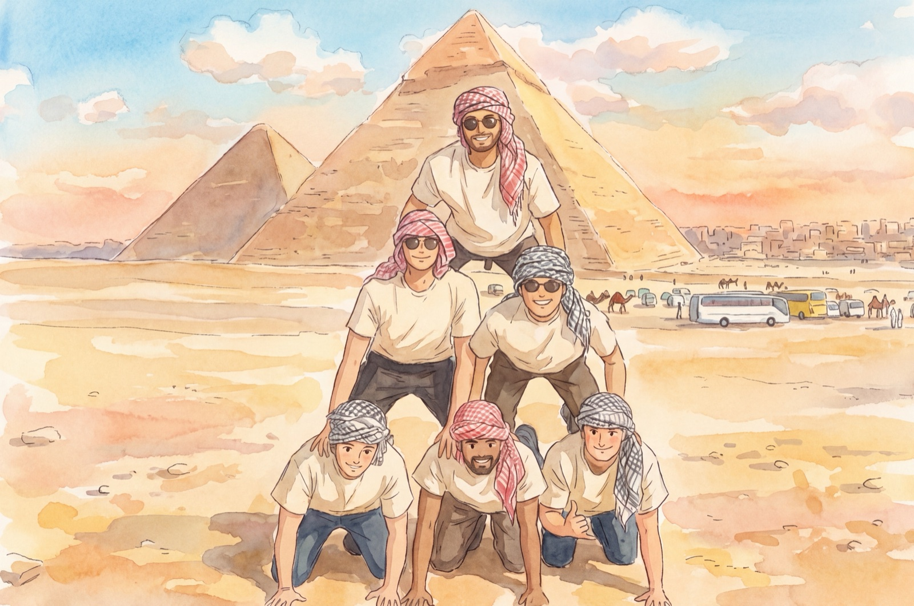
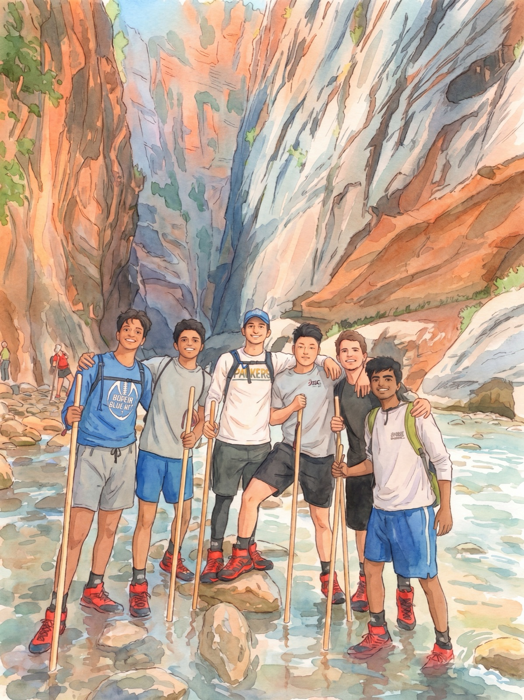
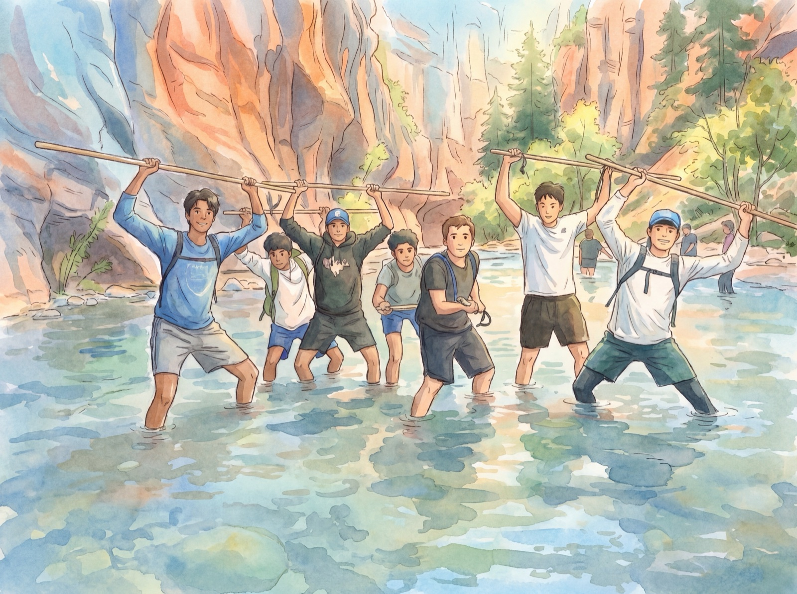
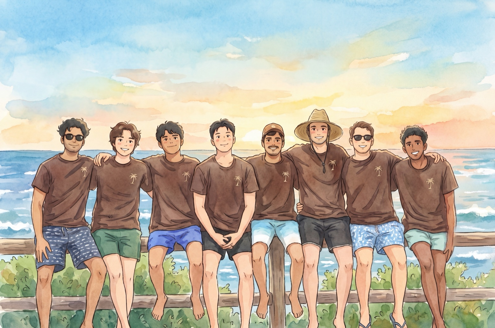
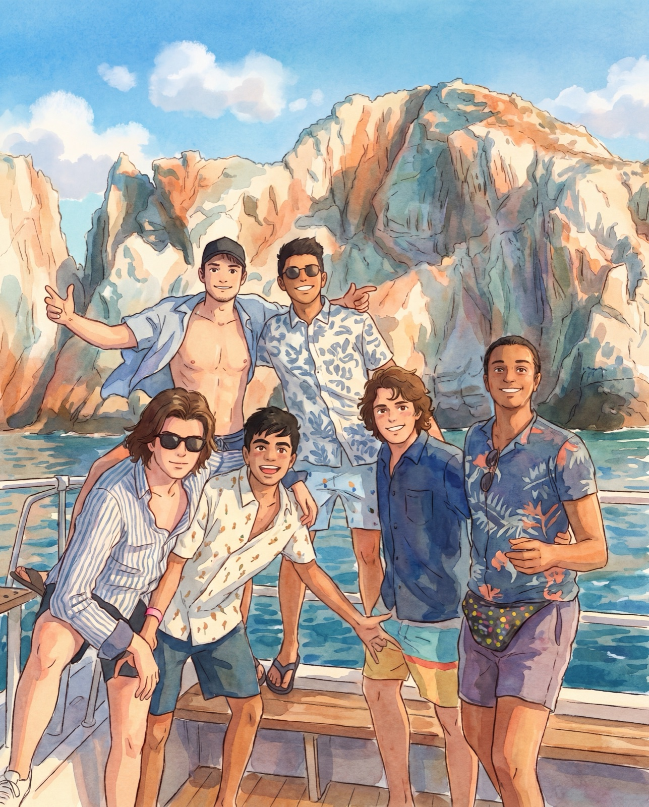
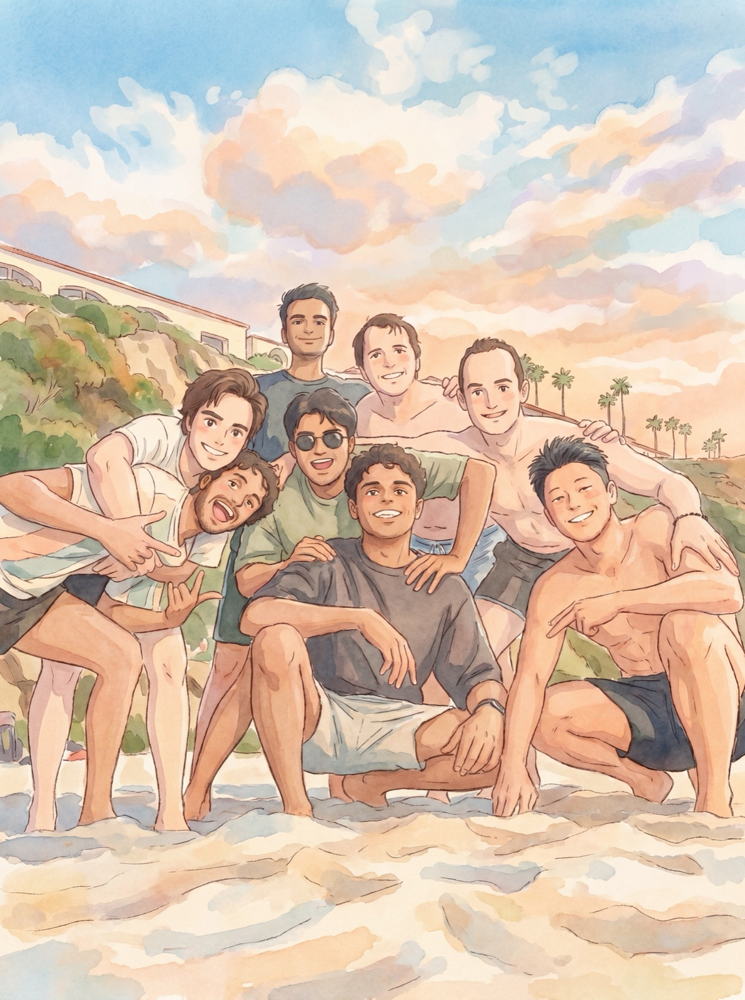
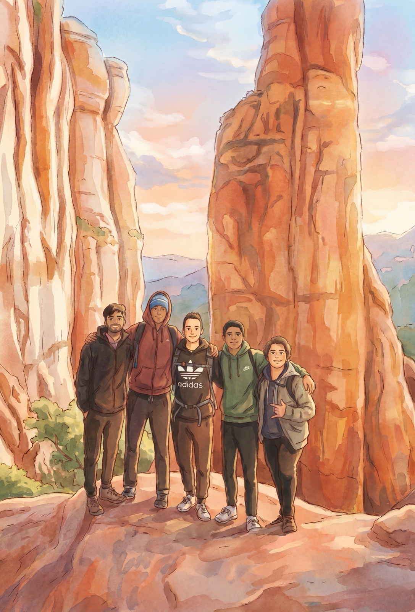
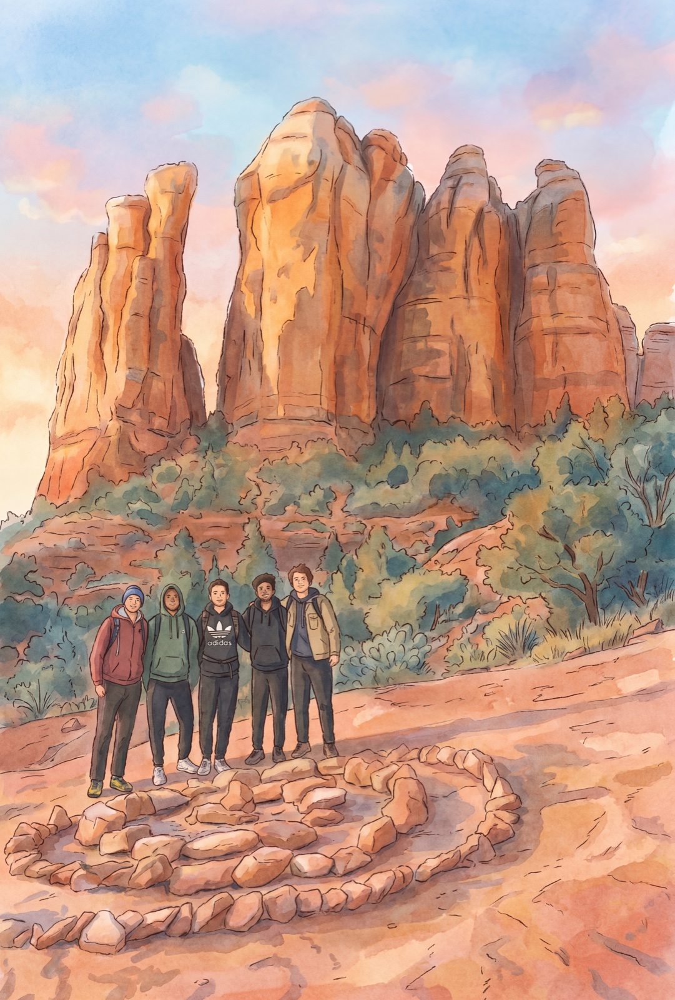
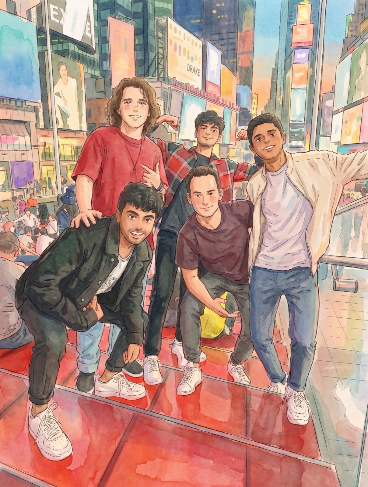
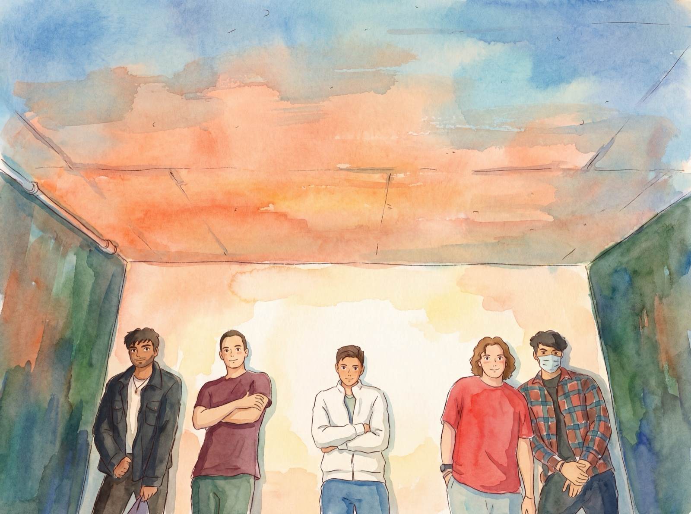

Reel II · The Storyboard
Stills From a World Painted From Memory
in roughly the order we remember them

 Ref
Ref
FinalZion, knee-deepThe Narrows · Scene 07








A Closing Card
Painted for [GROOM] — by the brothers,
on the occasion of his wedding to [BRIDE].
on the occasion of his wedding to [BRIDE].
— with all our years, all our weather —
Fin.
Hand-Painted · 1 of 1
Brotherhood Films